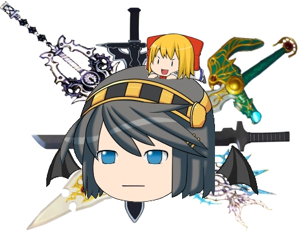
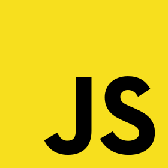
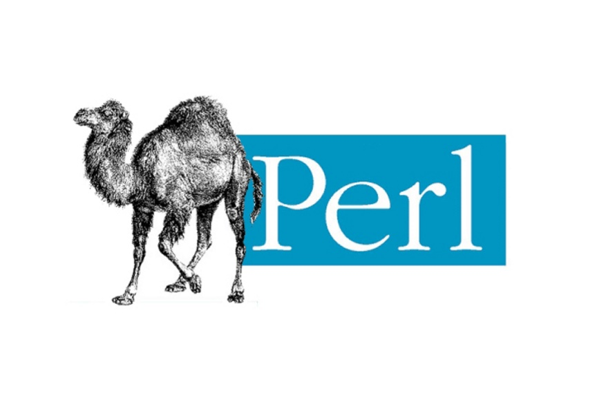
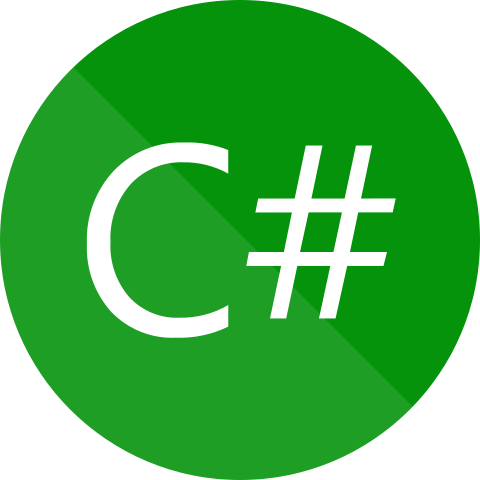
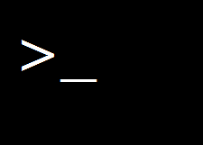
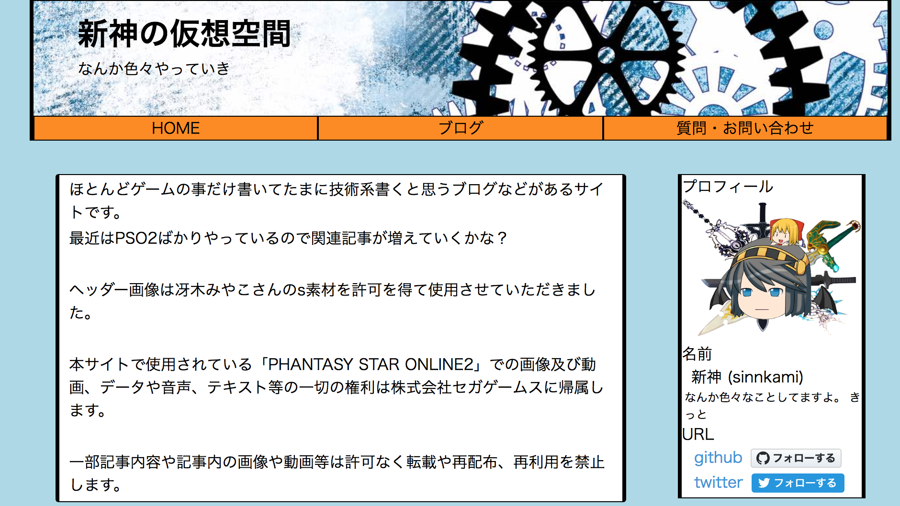
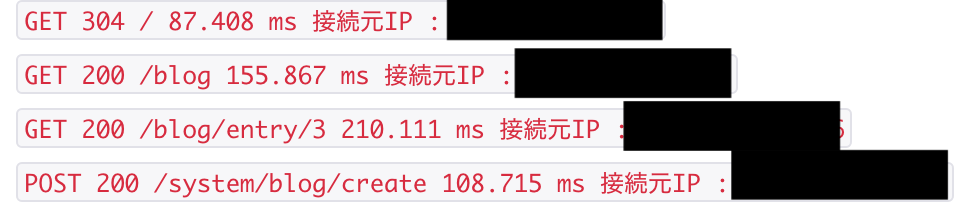
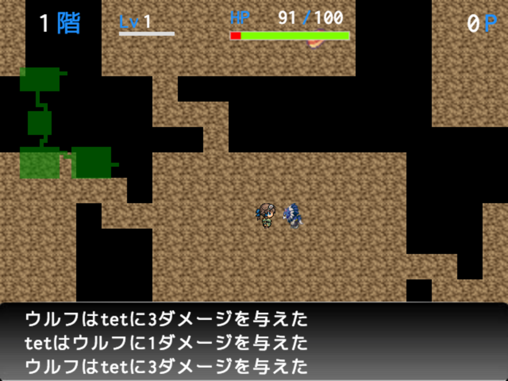
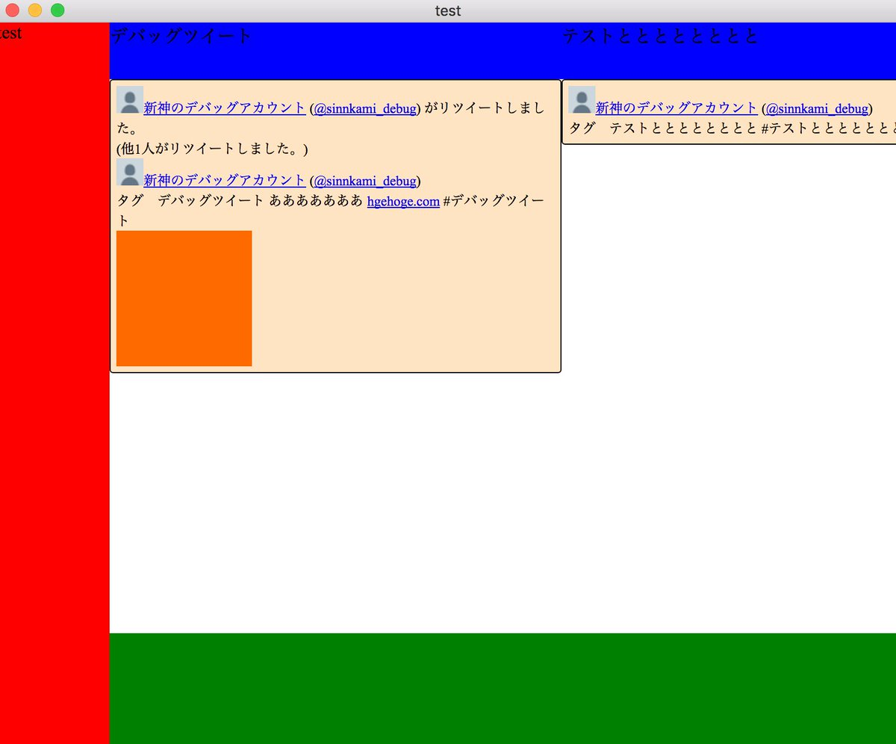

プロフィール
-
- 名前 :
- 新神(sinnkami)
-
- 職業 :
- プログラマ
-
- メール :
- sinnkami.mail@gmail.com
-
- twitter :
- @sinnkami_
-
- github :
- sinnkami
使用言語

JavaScript
Ruby

Perl
Java
PHP

C#

ShellScript
制作物


サーバー監視bot
ウェブサイトのアクセス状況や、sshログインされた場合の通知をしています
slackと連携しており、通知はslackを通して来るように設定してあります
画像はありません
サーバー管理サイト
ウェブサイトや各Botの稼働状況など確認できるサイトです
リアルタイムで更新されるCPU使用率やメモリ使用状況、ログなどの情報も確認する事が出来ます

画像はありません

electron twitter(仮)
electronを使用しクロスプラットフォームのtwitterクライアントです
タイムラインの取得や、user streamを使用したタグ検索があります
現在はtwitter RSET API が廃止予定なので進行していません